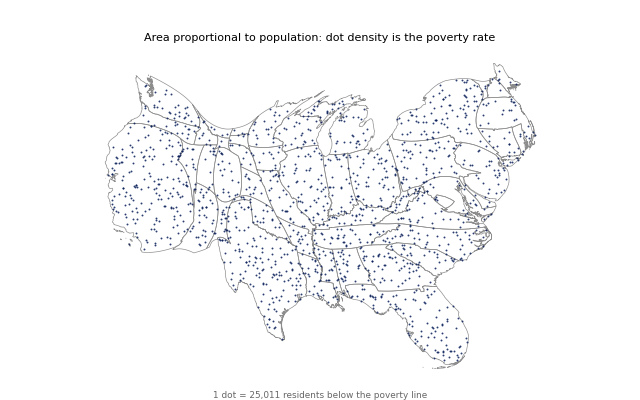
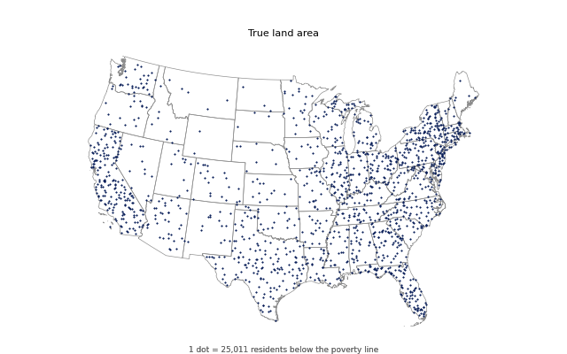

A gallery example carries dots generated on the true-area map as landmarks through a flow cartogram and draws them at every saved iteration with get_landmarks(iteration, uniform=True). With the defaults the carried dots have a border-band z-score of 3.8 and the uniform dots -0.5.
The animation is built by the gallery at documentation build time (a GIF of about 1 MB, not committed); the figures here are its first and last frame.
Border-band z-score over all states (8 seeds in pr133-landmark-uniform; one seed here): carried dots 3.77, uniform=True dots -0.46; the share of dots inside their own state at the end is 1.000 and 0.998. The talk needed a grid of 512 and recompute_every=1 to keep the drift down; the example uses the defaults.
| example | docs/examples/flow_cartogram/plot_flow_dot_morph.py, about 13 s with the GIF |
| not taken from the talk | the Hispanic variant and the assertions of the talk script |
The example runs; the docs build (including the GIF) runs in CI.

The flow cartogram with the dots carried along: the dot density is the poverty rate.

The true-area map with the dots.